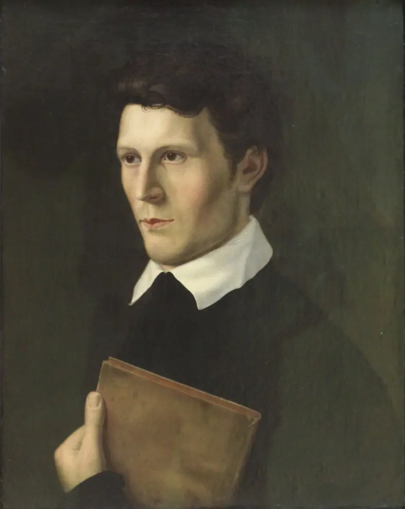
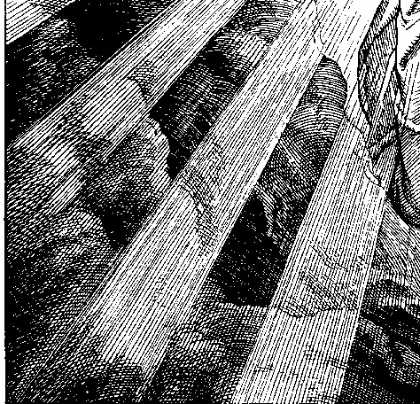
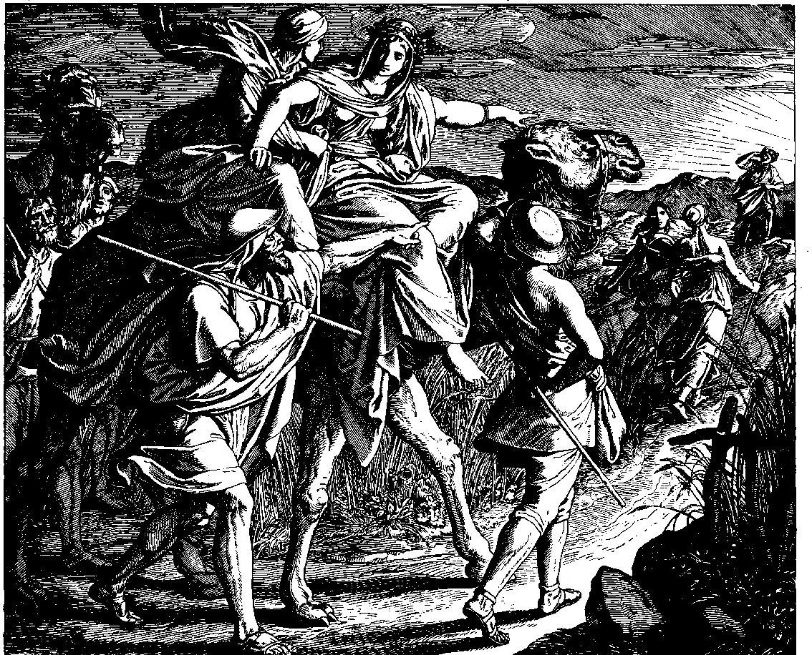

아직 펼치지 않은 카드다시 그리고 다시 만드는 성경 · 1슈노르 폰 카롤스펠트 『그림 성경』한 화가가 나이 들어 성경 전체를 240장의 그림으로 새겼어요. 이 그림책은 19세기 가정과 학교에서 어떤 역할을 했을까요?성경 이야기를 240장의 그림으로 그린 화가가 있대!
1819년 ~ 1860년독일 라이프치히 · 『그림 성경』 첫 장
슈노르 폰 카롤스펠트 『그림 성경』
독일 화가 율리우스 슈노르 폰 카롤스펠트가 마흔 해 넘게 매달린 『그림 성경』은 1860년 라이프치히에서 240장으로 묶여 나왔어요. 그 첫 장 ‘첫째 날’은 나무판에 새겨 검은 잉크 한 가지로 찍은 판화예요. 등불로 어둠을 문질러, 나무를 파내 만든 빛을 찾아보세요.
성경 이야기를 그림 240장으로 만든 화가가 있대. 첫 장의 하얀 빛은 나무를 파내서 만든 거래. 어둠을 문질러서 빛을 찾아볼까?
검수 전 시안이에요(기준서 1판 · ‘더 깊이’는 2026년 11월 22일 재벌). 그림 성경과 새김꾼에 대한 것은 뮌스터 대학교 성서박물관, 베를린 유럽문화박물관, 미국 국립미술관, 피츠 신학도서관, 프랑크푸르트 괴테 박물관의 기록에 있는 것만 옮겼어요. 목판 새김의 풀이는 워싱턴 대학교 도서관과 테이트 미술관을 따랐고, 기록마다 다른 것은 ‘기록마다 다른 점’에 적었어요. 상상은 ‘눈 감고 상상해 보기’에만 썼어요.
시안 확인용카드 단계 미리 보기
1
책을 든 젊은 화가
동료 화가 프리드리히 폰 올리비에(Friedrich von Olivier)가 그린 젊은 날의 율리우스 슈노르 폰 카롤스펠트(Julius Schnorr von Carolsfeld)예요. 독일 뮌스터 대학교의 성서박물관은 그가 1819년부터 1860년까지, 마흔 해 넘게 이 그림 성경에 매달렸다고 적어요.
1860년 한 권으로 묶여 나온 책의 제목은 ‘그림으로 보는 성경 — 율리우스 슈노르 폰 카롤스펠트가 구상해 나무 위에 그린 240장의 그림’이에요(제목은 우리말로 옮겼어요). 그림마다 제목과 성경 구절, 그 구절이 성경 어디에 있는지를 함께 찍었어요.
뮌스터 대학교 성서박물관의 풀이에 따르면, 슈노르는 서문에서 이 책이 보통 사람들도 살 수 있고 알아볼 수 있는 성경이 되기를, 젊은이들의 배움에 보탬이 되기를 바랐어요.
라이프치히의 게오르크 비간트(Georg Wigand) 출판사가 펴냈고, 브라이트코프 운트 헤르텔(Breitkopf & Härtel) 인쇄소가 찍었어요.
책을 든 젊은 화가 아저씨야. 이 아저씨가 성경 이야기를 그림 240장으로 만들었대.
물어보기240장을 다 그리려면 얼마나 걸렸을까?
2
첫째 날의 빛
240장 가운데 첫 장은 하나님이 세상을 지으신 엿새 가운데 ‘첫째 날’이에요. 하나님이 빛이 생기라고 말씀하시자 빛이 생겼고, 빛과 어둠을 나누어 낮과 밤이라 부르셨다는 대목이에요(창세기 1장 3~5절).
이 그림은 검은 잉크 한 가지로 찍었어요. 하얀 빛은 새김꾼(그림을 나무에 새기는 사람)이 나무를 파낸 자리, 검은 어둠은 나무를 남겨 둔 자리예요. 등불로 어둠을 문질러 그림을 밝혀 보세요.
등불로 어둠을 문질러 첫째 날의 그림을 밝혀 보세요. 숨은 곳 다섯 군데에 빛이 닿으면 이름이 떠요.

『그림 성경』 1번 그림 ‘첫째 날’(목판 새김, 1852~1860년 사이) · 그림: 율리우스 슈노르 폰 카롤스펠트 · 새김: 알 수 없음 · 퍼블릭 도메인 · 위키미디어 공용
빛이 닿으면 숨은 표시가 나타나요.
다 비췄어요. 이 그림의 빛은 잉크가 닿지 않은 종이예요. 나무를 파낸 만큼 밝아졌어요.
이런 판을 ‘목판 새김’이라고 해요. 나무판을 파서 찍는 판화의 하나로, 나무를 가로로 자른 단단한 면에 새겨요. 그림 판을 활자(글자를 새긴 작은 쇠 도장)와 같은 높이로 맞추면 글과 그림을 한 번에 찍을 수 있었어요. 워싱턴 대학교 도서관은 사진으로 그림을 찍어 내기 전, 증기 인쇄기로 많이 찍던 19세기에, 값싸면서도 볼 만한 그림을 낼 수 있는 방법은 이것뿐이었다고 풀어요.
슈노르가 나무 위에 그린 그림을 새긴 사람은 따로 있었어요. 미국 국립미술관의 기록에는 이 책의 새김꾼 열일곱 명의 이름이 올라 있어요. 남아 있는 기록에서는 첫째 날을 새긴 사람의 이름을 찾지 못했어요.
하얀 빛은 나무를 파낸 자리래. 까만 데는 나무를 남겨 둔 자리야.
물어보기빛을 밝게 만들려면 나무를 더 많이 파야 할까, 덜 파야 할까?
눈 감고 상상해 보기
1850년대 독일의 어느 집, 저녁 등불 아래예요. 몇 장씩 나눠 나오던 그림 성경의 새 묶음을 펼치자 첫 장에서 하얀 빛줄기가 쏟아져 나와요. 아이가 손가락으로 빛줄기 하나를 따라 내려가고, 종이에서는 잉크 냄새가 나요.
눈을 감아 봐. 등불 아래에서 새 그림책을 펼쳤어. 첫 장에서 하얀 빛이 쏟아져. 손가락으로 빛줄기를 따라가 봐.
나의 자리
젊은 슈노르를 다시 보세요. 그의 그림 성경 240장은, 나무를 파낸 빛에서 시작해요.
첫째 날 그림의 빛은 나무를 파낸 자리였어요. 검은 잉크 한 가지로 빛을 그린다면, 나는 어디를 비워 둘까요?
까만 펜 하나로 해님을 그린다면, 어디를 하얗게 남겨 둘래?
마음에 닿는 한 줄을 고르거나 직접 써 보세요. 한 줄을 남기면 이 자리의 도장이 찍혀요. 이 기기에만 저장돼요.
더 깊이
이야기를 보다 궁금해질 만한 것들이에요. 답을 읽거나 짧은 영화로 보세요.

파낸 자리는 왜 하얘요? 그림은 누가 그리고, 누가 팠어요?

이 그림책은 19세기 집과 학교에서 무엇이었어요?
뒷이야기
아직 펼치지 않은 이야기예요. 누르면 이야기가 펼쳐지고 색이 돌아와요. 더 알고 싶으면 근거를 따라가 보세요.
다 펼치면, 다음에 오실 때 새 이야기가 찾아와요.
오늘의 뒷이야기는 여기까지예요. 다음에 오시면 새 이야기가 기다리고 있어요.
펼친 뒷이야기 · 누르면 다시 볼 수 있어요
더 찾아보기
기록마다 다른 점
목판화일까, 목판 새김일까 위키미디어 공용과 뮌스터 성서박물관은 이 그림들을 ‘목판화(Holzschnitt)’라 부르고, 베를린 유럽문화박물관과 미국 국립미술관은 ‘목판 새김(Holzstich, wood engraving)’이라 적어요. 나무의 결을 따라 켠 널판에 칼로 새기면 목판화, 결을 가로로 자른 단면에 조각칼로 새기면 목판 새김이에요.
언제 나오기 시작했나 프랑크푸르트 괴테 박물관의 기록은 1852~1860년, 미국 국립미술관은 1853~1860년으로 적어요. 피츠 신학도서관이 올린 240장은 1853년 판이에요.
첫째 날을 새긴 사람 빅토리안 웹은 이 그림의 새김꾼을 ‘알 수 없음’으로 적었어요. 이 카드가 쓴 그림에서도 귀퉁이에 이름을 찾지 못했어요.
첫째 날의 빛 금박
어둠을 비춰 숨은 곳 다섯 군데를 모두 찾으면 카드에 금박이 입혀져요.
첫째 날의 그림을 끝까지 비춰 숨은 곳 다섯 군데 찾기
아이와 함께 끝까지 채색
아이와 함께 영화처럼 보기를 끝까지 보면 카드가 채색돼요.
아이와 함께 ‘영화처럼 보기’를 끝까지 보기
근거 보기 (23)
- 뮌스터 대학교 성서박물관(westfalen museum-digital) — 슈노르가 1819~1860년 이 그림 성경에 매달림, 목판화(Holzschnitt) 240장, 서문의 뜻(보통 사람들이 살 수 있고 알아볼 수 있는 성경, 젊은이의 배움), 21번 바벨탑(반쯤 지은 탑, 말의 뒤섞임, 셈·함·야벳)
- 베를린 국립박물관 유럽문화박물관(smb museum-digital) — 제목 ‘240 Darstellungen, erfunden und auf Holz gezeichnet’, 1860 라이프치히, 게오르크 비간트 출판, 브라이트코프 운트 헤르텔 인쇄, 가로 그림 240장 21.8×25.8cm(그림마다 제목·성경 구절·구절 자리), 목판 새김(Holzstich)
- 미국 국립미술관(NGA) 2017.80.1, 『Biblia Sacra tabulis illustrata』 1853~1860 — 노란 석판 바탕 위 검은 목판 새김 240장, 판 22×25.7cm, 새김꾼 열일곱 명(가버·요흐·오버만·구에헤리·아데·아를란트 등)
- 피츠 신학도서관 디지털 이미지 자료실 — 1853년 판, 240장 모두 찍음
- 피츠 신학도서관, ‘이삭을 바치려던 아브라함’(창세기 22장) — 새김꾼 아우구스트 가버(1823~1894)의 이름이 오른쪽 아래 귀퉁이에
- 빅토리안 웹, 『그림 성경』 1번 그림 ‘첫째 날(Der erste Schöpfungstag)’ — 새김꾼 알 수 없음, 창세기 1장 3~5절
- 프랑크푸르트 괴테 박물관(자유 독일 학술원, hessen museum-digital) — 65번 그림 ‘모세의 죽음’ 밑그림, 1856년, 연필 위에 펜(조금 붓), 가버의 목판과 견줌, 1852~1860년, 퍼블릭 도메인 표시
- 워싱턴 대학교 도서관, Historical Book Arts ‘삽화 기법’ — 그림이 아닌 나무를 파내 그림을 돋을새김으로 남김, 활자와 같은 높이로 글과 함께 찍음, 목판 새김은 마구리에 조각칼, 18세기 말 뷰익, 증기 인쇄 시대에 값싸고 볼 만한 그림을 낸 방법
- 테이트 미술관 용어 풀이, Wood engraving — 아주 단단한 회양목의 마구리, 매우 가는 줄, 19세기 책·신문 그림에 널리 쓰임, 목판화와 다른 점
- 위키미디어 공용 — 1번 그림 파일(퍼블릭 도메인, 1129×911)
- 위키미디어 공용 — 앞면 그림: 드레스덴 알베르티눔, 프리드리히 폰 올리비에 「젊은 율리우스 슈노르 폰 카롤스펠트」(사진: Dguendel, CC BY 4.0)
- 『쿨투어구트』 2024년 3분기, 카린 라인 「리브가가 이삭을 보다」 — 1852~60년 낱장, 1860년 여덟 장씩 서른 묶음 240장, 호화판과 민중판, 1856년부터 한 장짜리 그림, 교회와 학교의 권장, 선물, 가정의 신앙 생활·학교·주일학교·어린아이 학교, 슈피츠베크 그림 Gm2057과 30번 판화
- 『새 독일 인물 사전(NDB)』 23권(2007, 자비네 파스터트) ‘슈노르 폰 카롤스펠트, 율리우스’ — 빈(1811)과 올리비에 형제(1813), 로마(1818), 뮌헨 왕궁 벽화(1831~, 황제의 방 1835~42 · 1944년 사라짐), 1846년 드레스덴 미술관장·교수, 1827년 결혼, 아들 루트비히 · 같은 쪽의 ADB(1891): 계획은 젊은 날부터, 1862년까지 매달림
- 뮌스터 대학교 성서박물관, 부활절 색칠 그림(PDF) — 슈노르의 1860년 그림(마지막 만찬·십자가·부활), 여러 성경책에 실려 여러 세대에 영향, 서문의 뜻
- 『새 가톨릭 백과사전』 ‘하나님 아버지의 도상’(encyclopedia.com) — 하늘의 손, 다니엘 7:9, 11세기 비잔틴 → 12세기 말 서방
- 리처드 스트래크, Christian Iconography: God the Father — 14세기부터 서방에서 수염 난 노인으로
- 채토·잭슨 『A Treatise on Wood Engraving』 9장(프로젝트 구텐베르크) — 마개 박기(plugging)
- 빅토리안 웹, 사이먼 쿡 「조지 핀웰과 목판 새김」 — 나무판에 그린 그림은 새기는 순간 사라짐
- 베를린 국립박물관 판화실, 슈노르의 「페르디난트 올리비에」 — 올리비에 형제와 빈 비덴의 저택, 1817년 말 떠나기 이틀 전
- 『베이커 음악가 인물 사전』·『옥스퍼드 간추린 음악 사전』(encyclopedia.com) — 루트비히 슈노르 폰 카롤스펠트(1836~1865), 첫 트리스탄
- 브리검 영 대학교 도서관 전시 「빅토리아 시대 삽화가」 — 목판 새김의 색 인쇄는 색마다 판을 따로
- 빅토리안 웹, 슈노르의 신약 그림 목록 — 마지막 ‘요한이 새 예루살렘을 보다’
- 위키미디어 공용 — 30번 ‘리브가’ · 65번 ‘모세의 죽음’ · 28번 ‘아브라함과 이삭’ · 240번 ‘새 예루살렘’ 그림 파일(모두 퍼블릭 도메인)
그림·사진·소리 출처
- 그림: 율리우스 슈노르 폰 카롤스펠트 · 새김: 알 수 없음 · 퍼블릭 도메인 · 위키미디어 공용
- 그림: 율리우스 슈노르 폰 카롤스펠트 · 퍼블릭 도메인 · 위키미디어 공용
- 그림: 율리우스 슈노르 폰 카롤스펠트 · 새김: 아우구스트 가버 · 퍼블릭 도메인 · 위키미디어 공용
- 그림: 율리우스 슈노르 폰 카롤스펠트 · 새김: 아우구스트 가버 · 퍼블릭 도메인 · 위키미디어 공용
- 그림: 율리우스 슈노르 폰 카롤스펠트 · 퍼블릭 도메인 · 위키미디어 공용
- 그림: 율리우스 슈노르 폰 카롤스펠트 · 퍼블릭 도메인 · 위키미디어 공용
- 그림: 율리우스 슈노르 폰 카롤스펠트 · 퍼블릭 도메인 · 위키미디어 공용
- 그림: 율리우스 슈노르 폰 카롤스펠트 · 퍼블릭 도메인 · 위키미디어 공용
- 그림: 율리우스 슈노르 폰 카롤스펠트 · 퍼블릭 도메인 · 위키미디어 공용
- 그림: 프리드리히 폰 올리비에 · 사진: Dguendel · CC BY 4.0 · 위키미디어 공용
- 그림: 프리드리히 폰 올리비에 · 사진: Dguendel · CC BY 4.0 · 위키미디어 공용
- 그림: 프리드리히 폰 올리비에 「젊은 율리우스 슈노르 폰 카롤스펠트」 · 사진: Dguendel · CC BY 4.0 · 위키미디어 공용
‘처음 만나는 기독교 문화’의 깊은 카드예요. 카드 단계와 남긴 글은 이 기기에만 저장돼요.